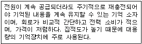
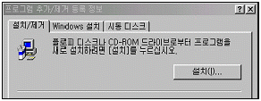
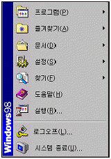
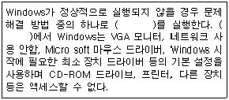
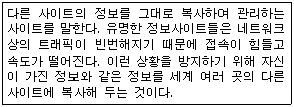
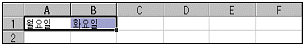
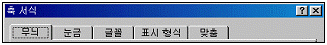
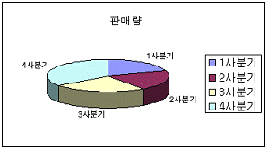
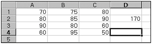

컴퓨터활용능력-3급(폐지) (2001-06-24 기출문제)
1과목: 컴퓨터 일반
1. 다음 중 컴퓨터의 처리속도 단위를 나타내는 것으로 옳지 않은 것은?
- ns
- ps
- fs
- os
(정답률: 87%)

2. 다음 중 중앙처리장치의 구성 요소로 적합하지 않은 것은?
- 연산장치
- 레지스터
- 입력장치
- 제어장치
(정답률: 57%)
3. 전세계 모든 문자를 표현할 수 있는 16비트 완성형 코드는?
- 비씨디(BCD)코드
- 아스키(ASCII)코드
- 해밍(Hamming)코드
- 유니(Uni)코드
(정답률: 88%)
4. 컴퓨터의 출력 장치 중 프린터 인쇄 속도의 단위가 아닌 것은?
- DPI
- LPM
- PPM
- CPS
(정답률: 66%)
5. PC통신 또는 인터넷에 접속하여 다른 사람들이 필요로 하는 자료를 게시판 또는 자료실에 전송하는 것을 무엇이라 하는가?
- 해킹(Hacking)
- 업로드(Upload)
- 유즈넷(Usenet)
- 다운로드(Download)
(정답률: 69%)
6. 아래의 보기 문장이 설명하고 있는 가장 적합한 기억장치는?

- SRAM(Static RAM)
- DRAM(Dynamic RAM)
- PROM(Programmable ROM)
- EPROM(Erasable ROM)
(정답률: 66%)
7. 한글 Windows 98에서 Windows 구성 요소 중 바탕화면 테마를 삭제하려고 한다. 다음 [프로그램 추가/제거 등록정보] 대화상자에서 어느 탭을 눌러야 하는가?

- Windows 설치
- 시동 디스크
- 설치/제거
- 설치(I)
(정답률: 52%)
8. 다음은 한글 Windows 98의 아이콘에 대한 설명이다. 옳지 않은 것은?
- ‘바탕화면에 바로 가기 만들기’ 메뉴로 프로그램의 바로가기 아이콘을 만들 수 있다.
- 바로가기 아이콘은 어디서나 실행할 수 있도록 연결(link)만 담당하는 것이다.
- 프로그램을 삭제한 경우에도 바로 가기 아이콘이 있으면 프로그램이 실행된다.
- 바로 가기 아이콘을 지워도 프로그램 자체에는 아무 손상이 없다.
(정답률: 71%)
9. 그림과 같이 윈도우에서 [시작] 버튼을 눌렀을 때 표시되는 메뉴에서 [문서]는 무엇을 보여주는 메뉴인가?

- [내문서] 폴더에 있는 파일 목록만을 보여준다.
- 윈도우 설치 후 읽었던 파일 목록들을 모두 보여준다.
- 인터넷에서 읽었던 문서의 목록만을 보여준다.
- 최근에 읽었던 문서나 파일들의 목록을 보여준다.
(정답률: 76%)
10. 한글 Windows 98에서 여러 개의 파일을 동시에 선택하고자 한다. 다음 설명 중 옳지 않은 것은?
- 선택하고자 하는 여러 개의 파일을 둘러싸도록 마우스로 드래그한다.
- 선택하려는 첫 파일을 마우스로 클릭한 후, 마지막 파일을 [Shift] 키를 누르고 마우스로 클릭한다.
- 선택하려는 첫 파일을 마우스로 클릭한 후, 각각의 파일을 [Ctrl] 키를 누르고 마우스로 클릭한다.
- 선택하려는 모든 파일을 [Alt] 키를 누르면서 마우스로 클릭한다.
(정답률: 77%)
11. 한글 Windows 98에서 문서를 인쇄하면서 동시에 다른 작업을 할 수 있다. 이와 같이 동시에 여러 개의 작업을 수행할 수 있는 기능을 무엇이라고 하는가?
- Multi-tasking
- Multi-windows
- Multi-processing
- Multiplexing
(정답률: 70%)
12. 다음 중 실행 중인 프로그램을 종료하는 방법이 아닌 것은?
- 실행 중인 프로그램의 제목 표시줄에서 를 마우스로 클릭한다.
- [Ctrl]+[Alt]+[Delete]키를 두 번 눌러 표시되는 창에서 종료하려는 파일을 선택하고 [작업종료] 버튼을 누른다.
- 작업표시줄에서 실행 프로그램을 마우스 오른쪽 버튼으로 클릭한 후, [닫기]를 누른다.
- 종료하려는 프로그램이 활성화된 상태에서 키보드의 [Alt] +[F4]를 누른다.
(정답률: 79%)
13. 한글 Windows 98의 휴지통에 관한 다음 설명 중 옳지 않은 것은?
- 휴지통 내에 지워진 파일이 저장되어 있는 경우와 휴지통이 비어 있는 경우의 표시되는 아이콘 모양이 다르다.
- [Shift]+[Delete]를 눌러 파일을 삭제한 경우 그 파일은 휴지통에 보관되지 않는다.
- 플로피 디스크 드라이브로부터 삭제한 파일은 휴지통에 보관된다.
- 되살리려는 파일을 선택하고 마우스 오른쪽 단추를 클릭한 후 [복원]을 실행하면 원래의 위치에 복구된다.
(정답률: 77%)
14. 다음 ( ) 안에 들어갈 알맞은 말은?

- 일반 모드
- 초기 모드
- 안전 모드
- 표준 모드
(정답률: 87%)
15. 소프트웨어는 시스템 소프트웨어와 응용소프트웨어로 분류된다. 시스템 소프트웨어에 속하지 않는 소프트웨어는?
- 컴파일러(Compiler)
- 스프레드시트(Spread Sheet)
- 어셈블러(Assembler)
- 링커(Linker)
(정답률: 73%)
16. 인터넷에서 자원의 위치를 나타내는 URL의 구성요소가 아닌 것은?
- 프로토콜
- 호스트 이름
- 디렉토리 경로
- 접속시간
(정답률: 66%)
17. 아래 보기의 문장이 설명하고 있는 가장 적절한 용어는?

- 미러(mirror) 사이트
- 페어(pair) 사이트
- 패밀리(family) 사이트
- 서브(sub) 사이트
(정답률: 75%)
18. 인터넷의 IP 주소는 숫자로 되어 있다. 이를 쉽게 이해하도록 문자로 표시하는 것을 무엇이라고 하는가?
- Domain Name
- Host Name
- IP Name
- Internet Name
(정답률: 76%)
19. 다음 중 HTTP 프로토콜을 이용한 인터넷의 가장 대표적인 서비스는?
- FTP
- WWW
- HTML
(정답률: 81%)
20. 최근에 컴퓨터 바이러스에 대한 피해가 증가하고 있다. 다음 중 컴퓨터 바이러스 피해에 대한 대비책과 가장 거리가 먼 것은?
- 최신의 바이러스 예방 및 퇴치 프로그램 사용
- 입력장치에 바이러스 감시 카메라 설치
- 주기적으로 하드디스크 백업 실시
- 인가받지 않은 사람의 시스템 사용통제
(정답률: 70%)
2과목: 스프레드시트 일반
21. 셀에 데이터를 입력할 때 왼쪽으로 정렬되지 않는 것은?
- Y2K
- 99%
- 140+20
- A-1
(정답률: 67%)
22. 아래 그림에서 [A1]과 [B1] 셀을 하나의 블록으로 설정한 후 [Ctrl]키를 누른 상태에서 채우기 핸들을 [E1] 셀까지 마우스 끌기를 했을 때 [E1] 셀에 입력되는 데이터는?

- 월요일
- 화요일
- 수요일
- 금요일
(정답률: 46%)
23. 다음 중 숫자 데이터 입력 형태에 관한 설명으로 틀린 것은?
- 숫자를 괄호로 둘러싸면(예: (3) ) 음수로 인식한다.
- 숫자 앞에 - 기호를 입력하면 음수로 인식한다.
- 분수는 날짜 서식과 구분하기 위해 혼합형(예: 1 1/2)으로 입력한다.
- 숫자에 2,324와 같이 콤마를 입력하면 안 된다.
(정답률: 75%)
24. 다음은 셀의 메모에 대한 설명이다. 맞지 않은 것은?
- 메모상자의 크기 조절은 가능하다.
- 메모를 기록할 때의 단축키는 [Shift]+[F2]이다.
- 메모를 추가한 셀은 우측에 메뉴내용이 항상 표시되며 숨길 수 없다.
- 셀의 입력된 내용에 대해 보충설명을 기록할 때 사용한다.
(정답률: 71%)
25. 다음 중 데이터를 잘라 내고자 할 때 사용되는 단축키는?
- [Ctrl]+[C]
- [Ctrl]+[V]
- [Ctrl]+[X]
- [Ctrl]+[P]
(정답률: 90%)
26. 다음 중 연속적으로 위치해 있는 여러 개의 워크시트를 선택하는 방법으로 옳은 것은?
- 첫 번째 시트를 마우스로 클릭한 후 선택하고자 하는 마지막 시트를 [Shift]키를 누른 상태에서 마우스로 클릭한다.
- 첫 번째 시트를 마우스로 클릭하고 이후 선택하고자 하는 시트를 계속해서 마우스로 클릭한다.
- 첫 번째 시트를 마우스로 클릭한 후 선택하고자 하는 마지막 시트를 [Ctrl]키를 누른 상태에서 마우스로 클릭한다.
- 첫 번째 시트를 마우스로 클릭한 후 선택하고자 하는 마지막 시트를 [Alt]키를 누른 상태에서 마우스로 클릭한다.
(정답률: 64%)
27. 셀에 입력할 데이터의 형식을 지정하기 위해 사용자 정의 형식으로 ###.#00을 지정하였다. 987.5의 데이터 값은 어떻게 표시되는가?
- 987.555
- 987.500
- 987.5
- 987
(정답률: 83%)
28. 다음은 워크시트의 이름을 변경하는 방법과 관련된 설명이다. 잘못 설명한 것은?
- 해당 시트 탭에 마우스의 오른쪽 버튼을 누른 뒤, 표시되는 바로가기 메뉴의 ‘이름 바꾸기’를 선택하면 이름을 수정할 수 있는 상태가 된다.
- 해당 시트 탭을 마우스 왼쪽 버튼으로 더블 클릭하면 이름을 수정할 수 있는 상태가 된다.
- 시트이름에는 : / ? * \ 등의 기호는 사용할 수 없다.
- 시트의 이름은 한글과 영문만 입력된다.
(정답률: 70%)
29. 작성된 통합문서 파일의 보호를 위하여 암호 설정/해제 기능을 포함하고 있는 파일 메뉴는?
- 작업 상태 저장
- 다른 이름으로 저장
- 쪽 설정
- 등록 정보
(정답률: 70%)
30. IF(A1>=60, “합격”, “불합격”)의 설명으로 적당한 것은?
- [A1] 셀의 값이 60보다 커야만 합격, 그렇지 않으면 불합격
- [A1] 셀의 값이 60과 같으면 합격, 그렇지 않으면 불합격
- [A1] 셀의 값이 60이상이면 불합격, 그렇지 않으면 합격
- [A1] 셀의 값이 60이상이면 합격, 그렇지 않으면 불합격
(정답률: 77%)
31. 엑셀에서 ○, ☆, ※, △ 등과 같은 특수 문자를 입력하고자 한다. 다음 설명 중 옳은 것은?
- [삽입]-[특수문자]를 사용하여 입력한다.
- [Ctrl]키+[F10]키를 누른 후 특수문자를 선택한다.
- ㄱ, ㄴ, ㄷ 등 한글 자음을 입력한 후 [한자]키를 눌러서 입력한다.
- [입력]-[문자표]를 이용하여 입력한다.
(정답률: 82%)
32. 다음 수식 중 결과가 잘못 표현된 것은 어느 것인가?
- ="컴퓨터"&"활용"&"능력" : 컴퓨터활용능력
- =12%+2 : 212%
- =13&22 : 1322
- =13+"22" : #VALUE!
(정답률: 56%)
33. ‘1사분기’ 시트의 [B5:D10] 셀 영역을 참조하고자 한다. 다음 중 참조를 바르게 표현한 것은?
- =[1사분기]!B5:D10
- =(1사분기)B5:D10
- =1사분기!B5:D10
- =1사분기:B5:D10
(정답률: 56%)
34. 다음 중 엑셀에서 제공되는 함수에 대한 설명이다. 이 중 잘못된 것은?
- ROUNDUP - 숫자를 지정한 자리수로 내림한다.
- ABS - 절대값을 구한다.
- VAR - 표본집단의 분산을 구한다.
- TODAY - 시스템의 오늘 날짜를 입력해 준다.
(정답률: 79%)
35. 차트의 축 서식 설정과 관련된 다음 설명 중 옳지 않은 것은?

- 축 눈금의 최대, 최소값을 사용자가 정의할 수 있다.
- 축 표시형식(숫자, 통화 등)을 변경할 수 없다.
- 축 맞춤에서 문자열 인쇄방향을 사용자가 설정할 수 있다.
- 축 글꼴이 차트 크기에 따라 자동조절되도록 설정할 수 있다.
(정답률: 57%)
36. 다음 차트에서 설정되지 않은 옵션은?

- 범례
- 차트제목
- 데이터 테이블
- 데이터 이름표
(정답률: 71%)
37. 2000년 3월 1일에서 오늘까지 경과된 날짜수를 구하는 수식으로 옳은 것은?
- =TODAY()-DATE(2000,3,1)
- =YEAR()-DATE(2000,3,1)
- =DAY()-DATE(2000,3,1)
- =DATE(2000,3,1)-DAY()
(정답률: 72%)
38. 아래 시트에서 [D2] 셀의 수식이 =$A2+C$2로 적혀 있었다. 이를 [D4]에 복사했을 때 그 결과로 옳은 것은?

- 110
- 130
- 150
- 170
(정답률: 38%)
39. 다음의 데이터를 오름차순으로 정렬(Sort)할 때 앞(위)에서 두 번째로 정렬되는 값은 어느 것인가? (가.의 ‘1’은 숫자임)
- 1
- @
- 가
- a
(정답률: 52%)
40. 다음은 엑셀의 인쇄 기능에 대한 설명이다. 다음 중 알맞은 것은?
- 시트의 일부분을 선택하여 인쇄할 수 있다.
- 머리글에 그리기로 도형을 삽입할 수 있다.
- 셀에 삽입된 메모는 화면에서만 나타나고 인쇄시에는 출력할 수 없다.
- 화면을 확대, 축소하면 인쇄배율도 확대, 축소된다.
(정답률: 54%)